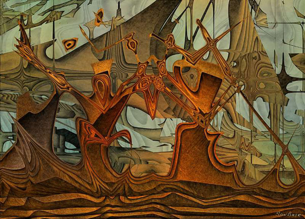
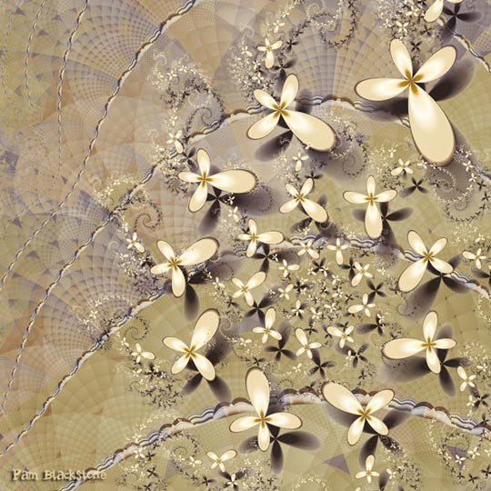
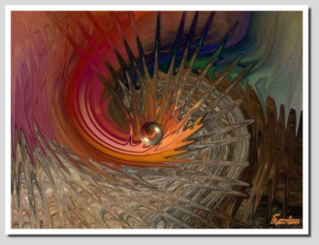
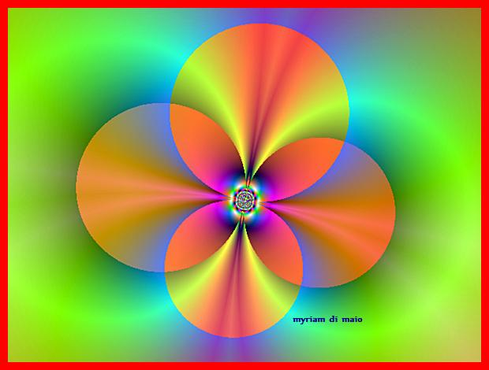
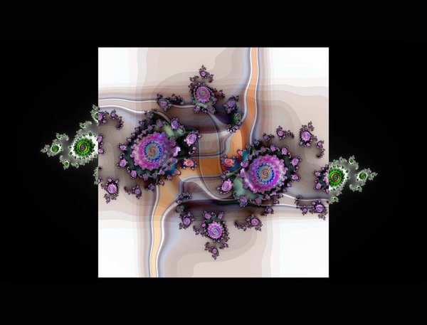
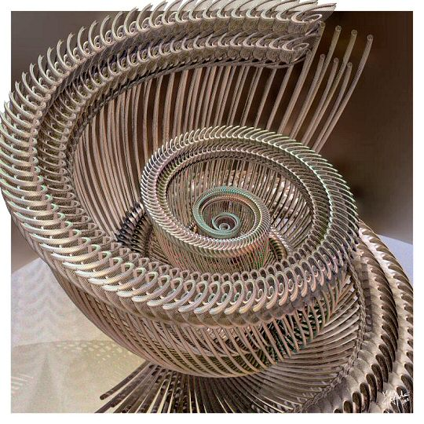
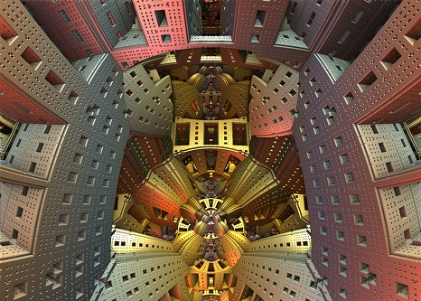
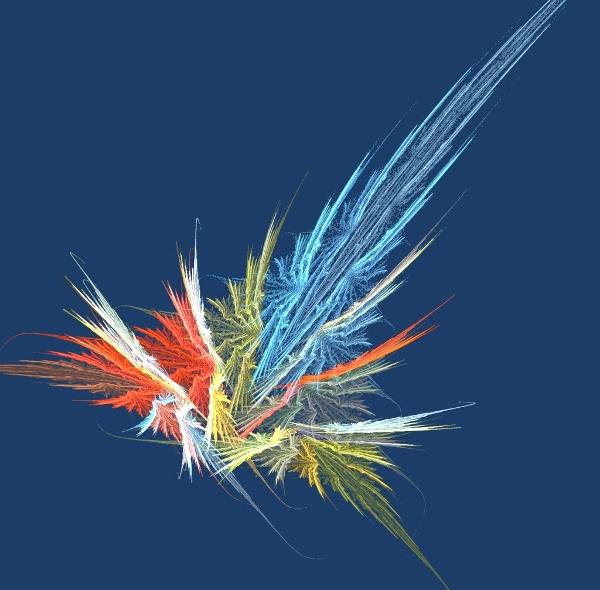
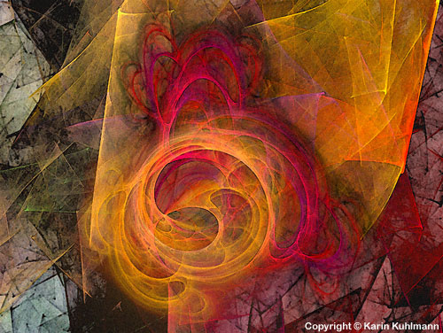

IMAGES OF THE DAY 81
09/11/2023 - 09/20/2023

09/11/2023
Algorithmic/Fractal
The Place Where Only Yesterday
by San Base
Click image to access artist's full exhibit

Algorithmic/Fractal
Organica
09/12/2023
Organelle
by Pam Blackstone
Click image to access artist's full exhibit

Algorithmic/Fractal
Karim Digital Kunst
09/13/2023
Inside the Volcano
by Karim Bouchnak
Click image to access artist's full exhibit

Algorithmic/Fractal
Digital Painting
09/14/2023
Radiance
by Myriam Di Maio
Click image to access artist's full exhibit

Algorithmic/Fractal
Flames and Fractal Algorithms
09/15/2023
Nodozonia
by Fractalia
Click image to access artist's full exhibit

Algorithmic/Fractal
09/16/2023
Quad-Spiral
by Juliette Gribnau
Click image to access artist's full exhibit

Algorithmic/Fractal
Mandelbulb 3D
09/17/2023
Escherville
by Paul Griffitts
Click image to access artist's full exhibit

Algorithmic/Fractal
Pictorial
09/18/2023
Starburst
by Will Johnson
Click image to access artist's full exhibit
Algorithmic/Fractal
Digital Stream of Consciousness
09/19/2023
Circumferent Chroma
by Casey Kotas
Click image to access artist's full exhibit


Algorithmic/Fractal
AbstraXness
09/20/2023
Symbiose
by Karin Kuhlmann
Click image to access artist's full exhibit
BACK TO IMAGES OF THE DAY 80
NEXT